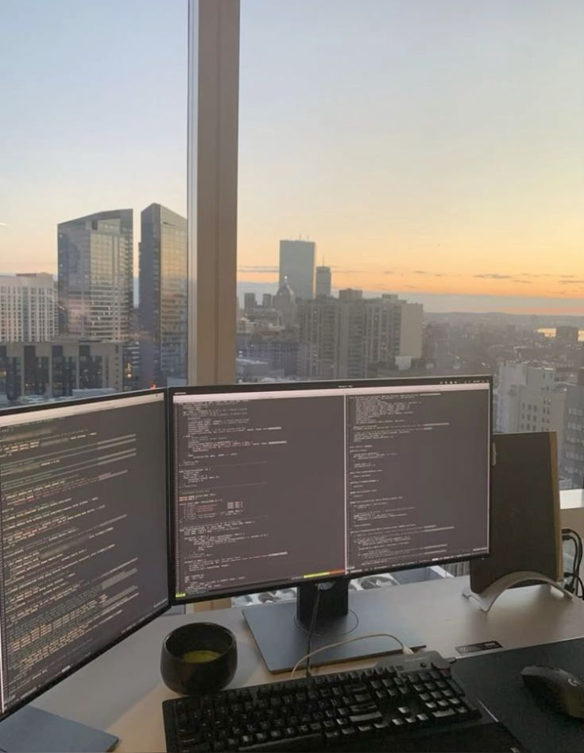

Milagro Deluge: Future

In the future, I want to combine my love for medicine and information technology to create meaningful solutions that improve people’s lives.
My dream is to become both a doctor and a computer engineer, using my skills to revolutionize healthcare and make it more accessible, efficient, and effective.

I have always been fascinated by the complexities of the human body and how medicine can heal and save lives. This fascination drives my desire to pursue a career in medicine, where I can provide care, comfort, and solutions to those in need. At the same time, my passion for programming and problem-solving has taught me how powerful technology can be in addressing real-world challenges. IT is not just about coding; it’s about creating tools that simplify processes and bring innovative solutions to life.
